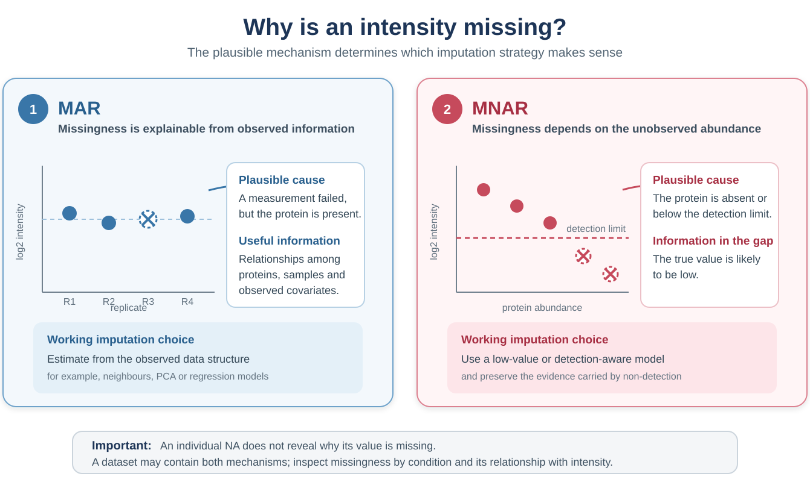
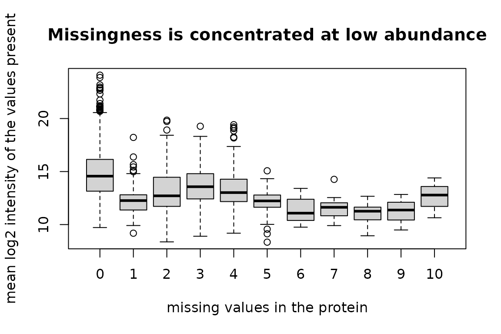
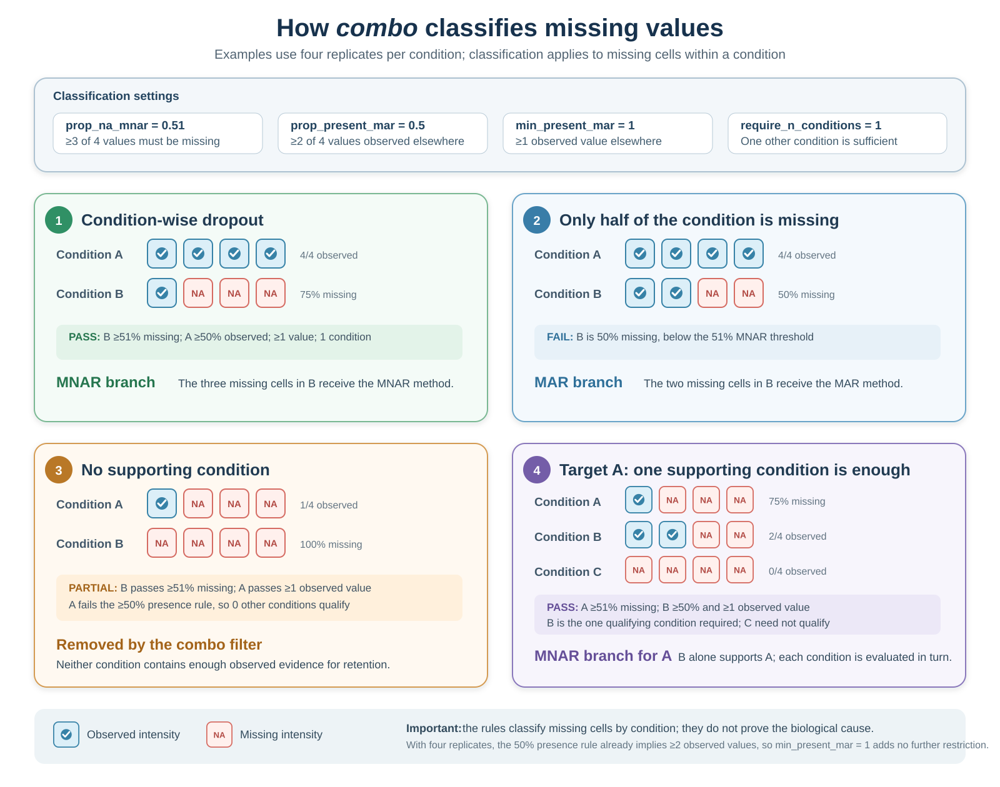

Missing values: what they mean and how to fill them
Sergio Ciordia
Source:vignettes/missing-values.Rmd
missing-values.RmdIntroduction
Missing values in a proteomics matrix are not interchangeable. A value may be absent because a protein was present but not quantified successfully, or because its abundance was too low to be detected. These mechanisms call for different assumptions and can coexist within the same experiment.
This vignette explains how to inspect that missingness, summarises
the 20 strategies available in NADIA and describes the behaviour of the
hybrid and detection-aware options. It does not repeat the benchmarking
metrics used to rank candidate methods; those are covered in
vignette("choosing-methods").
Installation
if (!requireNamespace("BiocManager", quietly = TRUE))
install.packages("BiocManager")
BiocManager::install("NADIA")Why values are missing
Imputation replaces missing entries with estimates so that analyses requiring a complete matrix can be performed. The estimate should reflect a plausible reason for the value being absent. NADIA uses the following practical distinction:
- MAR (missing at random): the protein is present, but its intensity was not quantified successfully—for example because of poor chromatography, precursor interference or a missed match. Under this assumption, the gap is not itself evidence that the unknown intensity was low. Its value can therefore be estimated from patterns in the available measurements, such as similar protein profiles or related samples.
- MNAR (missing not at random): the protein is absent or its abundance is below the detection limit. Missingness depends on the unobserved abundance being low and therefore carries biological or measurement information. Replacing such a gap with a typical neighbouring value may erase that evidence, so a low-value or detection-aware method is generally more plausible.

Practical distinction between MAR and MNAR missing values in proteomics. MAR values are reconstructed from observed data structure, whereas MNAR values call for a low-value or detection-aware model.
An individual NA does not reveal why the value is
missing. MAR and MNAR are possible explanations that must be evaluated
using the experimental design, the overall distribution of missing
values and their relationship with observed intensity. Both mechanisms
may occur in the same dataset.
How NADIA represents missing intensities
By the time the data enter the analysis, an unreported intensity is
represented as NA. How that NA is created
depends on the input format. In a long Spectronaut report, a protein
that was not quantified in a particular run is usually absent from the
report; when NADIA constructs the wide protein_quant table,
the corresponding protein–run cell becomes NA. Some wide
reports use zero instead to mark an unreported intensity. Before
normalisation, normalize_proteomics() converts these zeros
to NA, so downstream functions handle both situations
consistently.
Diagnosing missingness in the example data
The nadia_dia example dataset included with NADIA
retains the missing-value pattern of the original experiment.
Approximately 8% of its intensities are missing, and more than a quarter
of its proteins contain at least one gap.
quant <- as.matrix(nadia_dia$protein_quant[
grep("^PG.Quantity_", colnames(nadia_dia$protein_quant))])
round(100 * mean(is.na(quant)), 1)
#> [1] 8.1
table(missing_per_protein = rowSums(is.na(quant)))
#> missing_per_protein
#> 0 1 2 3 4 5 6 7 8 9 10
#> 1444 70 67 99 243 38 12 12 9 3 3The distribution of NA values across proteins is
informative. There are 70 proteins with one gap, 67 with two and 99 with
three, followed by 243 proteins with exactly four missing values. Four
is also the number of replicates per condition. Most of those 243
proteins are absent from every replicate of one condition:
condition <- rep(c("A", "B", "D"), each = 4)
whole_condition_missing <- apply(
quant, 1,
function(x) any(tapply(is.na(x), condition, all)))
c(exactly_four_missing = sum(rowSums(is.na(quant)) == 4),
whole_condition_missing = sum(rowSums(is.na(quant)) == 4 &
whole_condition_missing))
#> exactly_four_missing whole_condition_missing
#> 243 229Because each condition contains four replicates, a protein with four missing values may be absent from one complete condition. This pattern suggests that at least some gaps reflect condition-wise dropout rather than the scattered missingness usually treated as MAR in this workflow. As a complementary diagnostic, we next examine the distribution of the intensities that remain observed:
n_missing <- rowSums(is.na(quant))
mean_log2 <- rowMeans(log2(quant), na.rm = TRUE)
boxplot(mean_log2 ~ n_missing,
xlab = "missing values in the protein",
ylab = "mean log2 intensity of the values present",
main = "Missingness is concentrated at low abundance")
Proteins with more missing values tend to have lower observed intensities. This pattern supports the presence of an abundance-dependent MNAR component, in which low-abundance proteins are more likely to fall below the detection limit. However, this overall trend cannot determine the mechanism responsible for each individual missing value. Taken together, the condition-wise dropout pattern and its relationship with intensity suggest that this dataset contains both scattered gaps and missing values caused by low abundance.
Data processing shapes the missing-value pattern
NADIA includes DIA-NN and Spectronaut reports generated from the same twelve LC-MS injections. The instrument data, samples and raw files are therefore the same, allowing a descriptive comparison of the missing-value patterns produced by the two processing workflows.
Each trimmed file contains 2,000 protein groups selected independently, and only 336 groups are shared. The comparison can therefore describe overall patterns, but it is not a protein-by-protein benchmark of the two search engines.
summarise_missingness <- function(q) {
n_missing <- rowSums(is.na(q))
grp <- rep(c("A", "B", "D"), each = 4)
mean_log2 <- rowMeans(log2(q), na.rm = TRUE)
median_complete <- median(mean_log2[n_missing == 0])
median_incomplete <- median(mean_log2[n_missing > 0], na.rm = TRUE)
c(
missing_intensities_pct = round(100 * mean(is.na(q)), 1),
condition_dropout_pct = round(100 * mean(apply(
q, 1, function(r) any(tapply(is.na(r), grp, all)))), 1),
median_complete_log2 = round(median_complete, 1),
median_incomplete_log2 = round(median_incomplete, 1),
complete_minus_incomplete_log2 = round(
median_complete - median_incomplete, 1)
)
}
rbind(
spectronaut = summarise_missingness(quant),
diann = summarise_missingness(qd)
)
#> missing_intensities_pct condition_dropout_pct median_complete_log2
#> spectronaut 8.1 14.4 14.6
#> diann 12.5 20.4 22.2
#> median_incomplete_log2 complete_minus_incomplete_log2
#> spectronaut 12.7 1.9
#> diann 19.6 2.6The distribution of missing values per protein provides additional context:
missing_per_protein <- function(q) {
table(factor(rowSums(is.na(q)), levels = 0:12))
}
rbind(
spectronaut = missing_per_protein(quant),
diann = missing_per_protein(qd)
)
#> 0 1 2 3 4 5 6 7 8 9 10 11 12
#> spectronaut 1444 70 67 99 243 38 12 12 9 3 3 0 0
#> diann 1323 73 66 54 289 40 28 41 21 21 21 21 2The Spectronaut example contains 8.1% missing intensities, compared
with 12.5% in the DIA-NN example. In both matrices, the distribution
peaks at four missing values per protein—the number of replicates in one
condition—indicating that condition-wise dropout is common. This affects
14.4% of proteins in Spectronaut and 20.4% in DIA-NN; DIA-NN also
contains more proteins with eight or more missing values. Incomplete
proteins (n_missing > 0) have a lower median observed
intensity than complete proteins (n_missing = 0) in both
matrices, with a difference of 1.9 log2 units in Spectronaut
and 2.6 log2 units in DIA-NN. These within-matrix differences
do not compare the absolute intensity scales of the search engines.
Overall, the DIA-NN example shows more missingness, more condition-wise
dropout and a stronger association between low abundance and
missingness. This does not show that one search engine is better; it
shows that imputation decisions should be based on the missing-value
pattern of the matrix that will actually be analysed.
Imputation strategies available in NADIA
NADIA offers 20 selectable imputation strategies. The table below groups them according to their main purpose and the type of missingness they are generally intended to address. This grouping provides practical guidance; it does not imply that the mechanism behind every missing value can be determined unambiguously.
| Group | imp_method | Principle |
|---|---|---|
| Structure-based, generally used for MAR | bpca |
Bayesian principal-component imputation using
pcaMethods. |
knn |
Estimates a value from similar proteins using k-nearest neighbours. | |
mice |
Multiple imputation by chained equations; NADIA averages the completed matrices. | |
missForest |
Non-parametric random-forest imputation using relationships among variables. | |
Impseq |
Sequential model-based imputation from rrcovNA. |
|
Impseqrob |
Robust sequential imputation that reduces sensitivity to outlying profiles. | |
MLE |
Maximum-likelihood imputation under a multivariate normal model. | |
nbavg |
Replaces a gap with the mean of the nearest observed positions in the same protein profile. | |
| Low-value, generally used for MNAR | QRILC |
Quantile-regression imputation for left-censored data. |
MinDet |
Uses a low, sample-specific quantile; the default is the first percentile. | |
MinProb |
Draws low values around a sample-specific low quantile. | |
PI |
Perseus-style sampling from a narrowed, down-shifted normal distribution. | |
min |
Replaces every gap with the global observed minimum. | |
halfmin |
Uses half the global minimum on the original scale, equivalent to one unit below the minimum on the log2 scale; this convention is used by DIA-NN. | |
zero |
Replaces every gap with zero on the log2 scale. | |
with |
Replaces every gap with a user-supplied constant. | |
| Hybrid | combo |
Classifies missing cells from condition-wise presence patterns, then
applies separate MAR and MNAR methods. Defaults are
Impseqrob and min. |
softHybrid |
Blends estimates from MAR and MNAR methods continuously using protein missingness and mean intensity. | |
| Detection model | limpa |
Estimates a detection-probability curve and returns abundance
estimates with uncertainty for downstream analysis with
de_method = "limpa". |
| No imputation | none |
Leaves missing values unchanged. |
Structure-based methods estimate scattered gaps from relationships
among the observed proteins and samples. In contrast, low-value methods
assume that missingness is associated with low abundance and impute
values from the lower tail of the intensity distribution.
combo, softHybrid and limpa
address this distinction more explicitly, as described below. The
none option leaves the missing values unchanged and
therefore requires downstream methods that can analyse an incomplete
matrix.
halfmin operates on log2-transformed data.
Halving the global minimum on the original intensity scale is equivalent
to subtracting one from its log2 value, so the imputed value
is log2(minimum) - 1. Both min and
halfmin depend on the single lowest observed intensity in
the matrix. Distribution-based methods such as MinDet,
QRILC and MinProb instead characterise the
low-intensity tail using more than this single value.
Why one method may not represent every gap
If the imputation method does not match the likely cause of missingness, it may distort the biological signal. When a protein is not observed in any replicate of one condition, a MAR method may borrow information from the other conditions and impute values that are too similar to them. This can make a genuine presence–absence difference appear smaller. Conversely, when an isolated value is missing because of a technical measurement failure, an MNAR method may place it unnecessarily close to the detection limit and create an artificial difference between conditions.
Because both patterns can coexist, applying the same method to every
NA may not be appropriate. NADIA’s hybrid strategies
address this problem by applying different imputation assumptions to
different gaps. However, a hybrid method is not automatically the best
choice for every dataset: when one missingness mechanism predominates, a
single method may be sufficient. Candidate methods can be compared using
the procedure described in
vignette("choosing-methods").
The default hybrid: combo
The combo option is NADIA’s default because a single
dataset may contain both isolated missing measurements and proteins that
are not quantified in most or all replicates of a condition. For each
protein, NADIA examines how its observed and missing values are
distributed across the experimental conditions. Isolated gaps are
assigned to the MAR branch, whereas patterns consistent with
condition-wise dropout are assigned to the MNAR branch. By default,
these branches use Impseqrob and min,
respectively.
Four arguments control the classification:
-
prop_na_mnar = 0.51defines the minimum proportion of missing values within a condition for its gaps to be considered MNAR candidates. -
prop_present_mar = 0.5requires at least half of the replicates in another condition to contain an observed intensity for that protein. In this example, this means at least two of the four replicates. -
min_present_mar = 1requires at least one observed value in that other condition, regardless of its number of replicates. The proportional and absolute presence requirements must both be met. -
require_n_conditions = 1defines how many other conditions must meet both presence requirements. With the default value, one qualifying condition is sufficient.
A missing cell is assigned to the MNAR branch only when two criteria
are met: its condition reaches the required proportion of missing
values, and the required number of other conditions provide sufficient
observed evidence for that protein. All other missing cells are assigned
to the MAR branch. With four replicates,
prop_na_mnar = 0.51 requires at least three missing values
in a condition; two missing values represent only 50% and do not meet
the threshold.
The following examples use conditions A and B, each with four
replicates. Observed denotes a measured intensity.
Classification is performed separately for the missing cells in each
condition, so the protein is not assigned one fixed MAR or MNAR
label.

Examples of how the four combo arguments classify missing cells. A cell is assigned to the MNAR branch only when the missingness threshold and the evidence in other conditions are both satisfied; otherwise it enters the MAR branch or the protein may be removed by the preliminary combo filter.
In these examples, each condition has four replicates. Therefore,
prop_present_mar = 0.5 means that another condition must
contain at least two observed values before it can support an MNAR
classification. Once two values are observed, the requirement imposed by
min_present_mar = 1 is already satisfied, so this second
parameter does not change the classification here.
Before filling any missing values, combo also removes
proteins that contain too little observed information to apply these
rules. A protein is retained if it either contains a pattern classified
as an MNAR candidate or has sufficient observed values in at least
require_n_conditions conditions.
The following example reports how many proteins pass this filter and how many of the original missing cells are assigned to each branch:
res <- process_proteomics(nadia_dia, verbose = FALSE)
imp <- impute_proteomics(res$se_proc, "cycloess", verbose = FALSE)
x_combo <- SummarizedExperiment::assay(res$se_proc, "cycloess")
c(
proteins_before = nrow(nadia_dia$protein_quant),
proteins_after_combo_rules = nrow(res$se_proc),
MAR_missing_values = sum(imp$mar_mask & is.na(x_combo)),
MNAR_missing_values = sum(imp$mnar_mask & is.na(x_combo))
)
#> proteins_before proteins_after_combo_rules MAR_missing_values
#> 2000 1997 421
#> MNAR_missing_values
#> 1498The output shows that both branches are used. These assignments
reflect the selected rules and do not establish the true mechanism of
any individual NA. When a distribution-based MNAR method is
selected, its low-intensity parameters are estimated from the original
matrix, before MAR imputation, so reconstructed MAR values do not shift
the estimated lower tail.
softHybrid: a continuous combination
softHybrid was introduced by Shi et al. (2026)
as a hybrid imputation method for single-cell proteomics. Unlike
combo, which assigns each missing cell to either a MAR or
an MNAR branch, softHybrid calculates both estimates and
combines them continuously.
For each protein, the method uses its proportion of missing values
and its mean observed intensity to calculate a weight. Extensive
missingness and low intensity increase the contribution of the MNAR
estimate, whereas a well-observed, higher-intensity protein receives
more influence from the MAR estimate. The final value for each gap is
therefore a weighted average of the two estimates rather than the result
of a binary classification. NADIA uses Impseqrob and
min as the default MAR and MNAR methods, respectively.
The transition is controlled by two sigmoid functions. Parameter
a determines how rapidly the weight changes with the
missing-value proportion, b controls the transition along
the standardised intensity axis and lambda balances the two
signals. In most cases, the defaults provide the natural starting
point:
imp_soft <- impute_proteomics(
res$se_proc,
normalized_assay_name = "cycloess",
imp_method = "softHybrid",
mar_method = "Impseqrob",
mnar_method = "min",
verbose = FALSE)
grep("softHybrid", SummarizedExperiment::assayNames(imp_soft$se), value = TRUE)
#> [1] "softHybrid_Impseqrob_min"
imp_soft$imputation_summary
#> $na_rate_initial
#> [1] 0.08007845
#>
#> $na_rate_final
#> [1] 0
#>
#> $mean_w_mar
#> [1] 0.7502592
#>
#> $sd_w_mar
#> [1] 0.2569294
#>
#> $range_w_mar
#> [1] 0.004071537 0.920565448The summary reports the initial and final missing-value rates and the
distribution of the MAR weights. Whether this continuous combination
improves the analysis remains dataset-dependent and should be assessed
as described in vignette("choosing-methods").
limpa: detection-aware estimates with uncertainty
The limpa framework was described by Li, Cobbold and Smyth
(2025). It differs from conventional methods that simply replace
each missing value with a single completed-matrix estimate. First,
limpa estimates a detection-probability curve that relates
protein abundance to the probability of observing a signal. It then uses
this curve to estimate the abundance of missing measurements together
with their standard errors.
Here, precision means statistical reliability.
limpa converts each abundance estimate and its uncertainty
into a precision weight for differential analysis: an
estimate based on limited evidence receives less weight than an
observed, reproducible measurement. Missing values can therefore still
contribute information, while uncertain estimates have less influence on
the fitted model.
The estimates and weights are stored together and must remain linked through the differential abundance step:
res_limpa <- process_proteomics(nadia_dia,
imp_method = "limpa",
de_method = "limpa",
verbose = FALSE)
class(S4Vectors::metadata(res_limpa$se_proc)$limpa_elist)
#> [1] "EList"
#> attr(,"package")
#> [1] "limma"
table(res_limpa$DEPs_results$Change)
#>
#> Up Down No Change
#> 918 437 4636imp_method = "limpa" should therefore be paired with
de_method = "limpa". Using its abundance estimates with an
ordinary limma test would discard the uncertainty
model.
Choosing among the strategies
The missing-value pattern, biological design and intended differential model should guide the set of plausible strategies. When the true missing abundances are unknown, no diagnostic can establish a universally correct method. NADIA therefore provides artificial-masking metrics, ranking summaries and plots for comparing candidate methods, while sensitivity analysis shows whether the main biological conclusions depend on that choice.
Those evaluation procedures, their limitations and the interpretation
of the rankings are described in
vignette("choosing-methods"). Keeping them there separates
two questions: this vignette explains what the missing values
may mean and how NADIA can handle them; the companion vignette
explains how to compare the available choices on a particular
dataset.
References and software
Li M, Cobbold SA, Smyth GK (2025). Quantification and differential analysis of mass spectrometry proteomics data with probabilistic recovery of information from missing values. bioRxiv, 2025.04.28.651125. This work describes the statistical framework implemented in
limpa; the software is available from Bioconductor and GitHub.Shi Y, Davis S, Charles PD, Taylor S, Dombi E, Berridge G, Ebner D, Fischer R (2026). SoftHybrid: A Hybrid Imputation Algorithm Optimised for Single-Cell Proteomics Data. bioRxiv, 2026.01.13.699212. This work describes the
softHybridimputation strategy.
Session information
sessionInfo()
#> R version 4.6.1 (2026-06-24)
#> Platform: x86_64-pc-linux-gnu
#> Running under: Ubuntu 24.04.4 LTS
#>
#> Matrix products: default
#> BLAS: /usr/lib/x86_64-linux-gnu/openblas-pthread/libblas.so.3
#> LAPACK: /usr/lib/x86_64-linux-gnu/openblas-pthread/libopenblasp-r0.3.26.so; LAPACK version 3.12.0
#>
#> locale:
#> [1] LC_CTYPE=C.UTF-8 LC_NUMERIC=C LC_TIME=C.UTF-8 LC_COLLATE=C.UTF-8
#> [5] LC_MONETARY=C.UTF-8 LC_MESSAGES=C.UTF-8 LC_PAPER=C.UTF-8 LC_NAME=C
#> [9] LC_ADDRESS=C LC_TELEPHONE=C LC_MEASUREMENT=C.UTF-8 LC_IDENTIFICATION=C
#>
#> time zone: UTC
#> tzcode source: system (glibc)
#>
#> attached base packages:
#> [1] stats graphics grDevices utils datasets methods base
#>
#> other attached packages:
#> [1] NADIA_0.99.0 BiocStyle_2.40.0
#>
#> loaded via a namespace (and not attached):
#> [1] SummarizedExperiment_1.42.0 xfun_0.60 bslib_0.12.0
#> [4] htmlwidgets_1.6.4 rlist_0.4.6.2 Biobase_2.72.0
#> [7] lattice_0.22-9 limpa_1.4.0 vctrs_0.7.3
#> [10] tools_4.6.1 generics_0.1.4 stats4_4.6.1
#> [13] curl_8.0.0 tibble_3.3.1 DEoptimR_1.2-1
#> [16] cluster_2.1.8.2 xts_0.14.2 pkgconfig_2.0.3
#> [19] Matrix_1.7-5 data.table_1.18.6.1 desc_1.4.3
#> [22] S4Vectors_0.50.2 assertthat_0.2.1 lifecycle_1.0.5
#> [25] compiler_4.6.1 stringr_1.6.0 textshaping_1.0.5
#> [28] statmod_1.5.2 highcharter_0.9.5 Seqinfo_1.2.0
#> [31] htmltools_0.5.9 sass_0.4.10 yaml_2.3.12
#> [34] rrcov_1.7-7 pillar_1.11.1 pkgdown_2.2.1
#> [37] jquerylib_0.1.4 tidyr_1.3.2 DelayedArray_0.38.2
#> [40] cachem_1.1.0 limma_3.68.5 abind_1.4-8
#> [43] robustbase_0.99-7 tidyselect_1.2.1 digest_0.6.39
#> [46] mvtnorm_1.4-2 stringi_1.8.9 dplyr_1.2.1
#> [49] purrr_1.2.2 bookdown_0.48 splines_4.6.1
#> [52] pcaPP_2.0-5 fastmap_1.2.0 grid_4.6.1
#> [55] SparseArray_1.12.2 cli_3.6.6 magrittr_2.0.5
#> [58] S4Arrays_1.12.0 rrcovNA_0.5-3 broom_1.0.13
#> [61] backports_1.5.1 lubridate_1.9.5 timechange_0.4.0
#> [64] XVector_0.52.0 TTR_0.24.4 rmarkdown_2.32
#> [67] matrixStats_1.5.0 quantmod_0.4.29 otel_0.2.0
#> [70] norm_1.0-11.1 ragg_1.5.2 zoo_1.9-0
#> [73] evaluate_1.0.5 knitr_1.51 GenomicRanges_1.64.0
#> [76] IRanges_2.46.0 rlang_1.3.0 glue_1.8.1
#> [79] reactable_0.4.5 BiocManager_1.30.27 BiocGenerics_0.58.1
#> [82] jsonlite_2.0.0 R6_2.6.1 MatrixGenerics_1.24.0
#> [85] systemfonts_1.3.2 fs_2.1.0